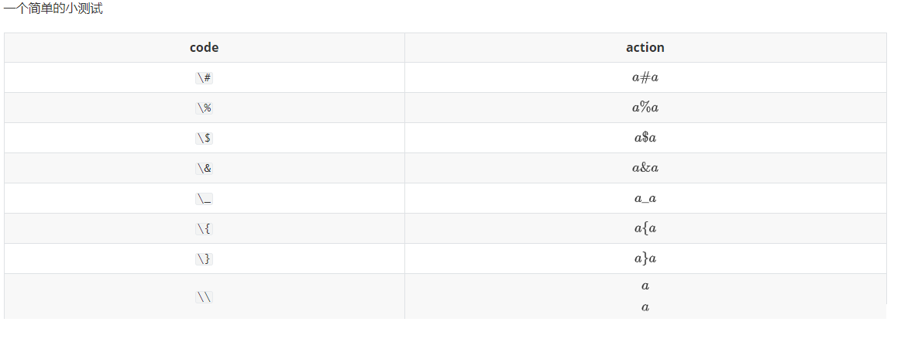
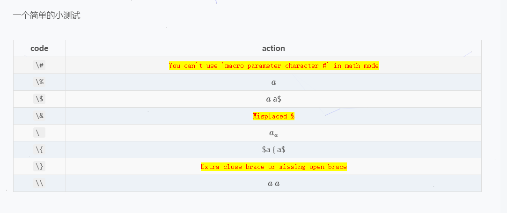
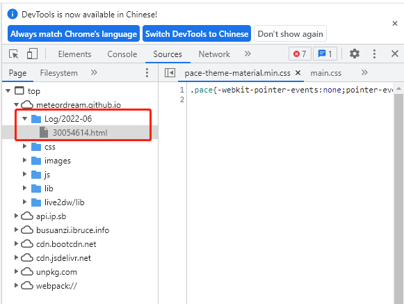
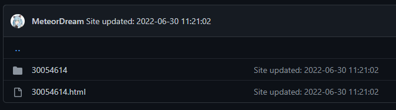
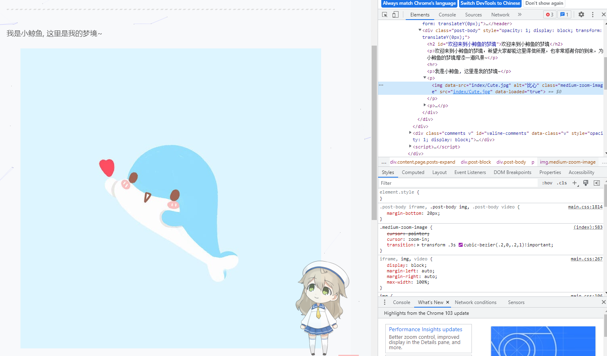

记录一些搭建博客、维护博客过程中遇到的一些奇奇怪怪的报错以及排查错误的记录，便于以后遇到同样问题后能够快速解决。
Hexo 官方文档：https://hexo.io/docs/
图片路径问题
参考 Hexo 官方文档：
文件名问题
数学公式问题
源代码是这样的
1
2
3
4
5
6
7
8
9
10
11
12
| 一个简单的小测试
| code | action |
| :---: | :------: |
| `\#` | $a \# a$ |
| `\%` | $a \% a$ |
| `\$` | $a \$ a$ |
| `\&` | $a \& a$ |
| `\_` | $a \_ a$ |
| `\{` | $a \{ a$ |
| `\}` | $a \} a$ |
| `\\` | $a \\ a$ |
|
本地预览是这样的

1656570326317
发布到网上变成了这样

1656570350862
原因: Hexo 渲染时会消耗掉一个 \,
然后数学公式里面的 \ 就没有了
解决方法1
需要转义的地方输入两个 \\，例如：
1
2
3
4
5
6
7
8
9
10
| | code | action | fix |
| :----: | :--------: | :--------: |
| `\\#` | $a \# a$ | $a \\# a$ |
| `\\%` | $a \% a$ | $a \\% a$ |
| `\\$` | `$a \$ a$` | $a \\$ a$ |
| `\\&` | $a \& a$ | $a \\& a$ |
| `\\_` | $a \_ a$ | $a \\_ a$ |
| `\\{` | $a \{ a$ | $a \\{ a$ |
| `\\}` | $a \} a$ | $a \\} a$ |
| `\\\\` | $a \\ a$ | $a \\\\ a$ |
|
坏处是这和常规的语法不兼容，本地渲染和预览都会报错，不太推荐
解决方法2
更换 hexo 的渲染引擎，问题本质上是 hexo 渲染引擎的 bug
产生的，所以我们最好更换一个没有这个 bug 的渲染引擎即可
因为我的本地计算机上是用 pandoc 进行渲染的，所以更换 pandoc
的渲染引擎，该引擎没有这个问题，只需执行：
1
2
| npm uninstall hexo-renderer-marked --save
npm install hexo-renderer-pandoc --save
|
当然，如果电脑上没有安装 pandoc, 那么还需要安装 pandoc, 参考官方文档:
https://pandoc.org/installing.html
这个是 github action 预定义好的安装流程
1
2
| - name: Install pandoc
uses: nikeee/setup-pandoc@v1
|
更换完成后就可以愉快的渲染博客啦~
…突然发现博客里面的图片又全挂了 :sob:.
图片渲染
《关于解决了数学公式结果图片又显示不出的问题》
换了 pandoc
的渲染引擎导致图片又渲染不出来了，先随便找一个有图片的文章检查一下：
1
| <img data-src="1656570326317.png" alt="1656570326317" class="medium-zoom-image" src="1656570326317.png" data-loaded="true">
|
打开 Sources
看看源文件，发现资源文件夹里面根本就没有图片，这也是为什么图片显示不出来的直接原因，但这不是根本原因，我们需要看看为什么没加载到图片文件

1656654082720
点进 Github 仓库查看，发现是有图片资源的

1656654435219
但图片的路径不对，那么问题应该出在 html
文件上，点开检测一下，果然，文件中的路径是在同一个文件夹下，但实际上我们的图片是在与文章同名的子文件夹下的
1
2
3
| <meta property="og:image" content="https://meteordream.github.io/Log/2022-06/1656570326317.png">
<meta property="og:image" content="https://meteordream.github.io/Log/2022-06/1656570350862.png">
<meta property="og:image" content="https://meteordream.github.io/Log/2022-06/1656575024880.png">
|
于是我怀疑是 convert.py 这个文件的问题，因为原生的 Hexo
渲染格式是会自动加上文件夹名的，即 
这样的图片实际上对应的是 ./post_title/abc.png
的路径，所以为了保持一致性我写了一个转换脚本在渲染时自动把实际路径转换为Hexo要求的路径，于是把
Github Action 中的 convert.py
的运行注释掉看看有没有用，发现还是无效。
就在我一筹莫展之际，我突然发现博客中有张图片是可以显示的

1656991352001
图片路径都很正常，我有些奇怪，为什么单单这张图片可以呢，该文章是在根目录下的，唯一一篇文章，除此之外没什么特别，又研究了一会儿，我又有了一个猜测，会不会是因为文章是中文路径的问题？于是我实验了一下：新建了一片文章在根目录下，文章名为英文，里面插入了
4
张图片，分别是路径和图片名是否带中文的，结果四张图片都显示不出来，看来也不是中英文字符编码问题，那是什么原因呢？
仔细检查了一下路径，发现所有文件都有统一的路径规则，即”文件路径/文件名/图片名”，这是很合理的，与我的图片文件存储规则一致，检查其他文件发现问题出在了这里
1
2
| 页面路径：https://meteordream.github.io/Log/2022-06/博客报错记录/1656570350862.png
实际图片路径：https://meteordream.github.io/Log/2022-06/30054614/1656570350862.png
|
即文章文件名被转为了设定好的格式，但图片路径没有转,
唯一一张显示正常的图片的文件是因为那个文件是我的博客中的欢迎界面，文件名没有被转，所以完好无损,
一时之间想不到什么好的办法，只能暂时将文件的链接改为文件名了(原本是自动转为给定的时间戳格式，因为不想文件带有中文名)，修改后图片显示恢复正常，问题解决。
PS：另外的解决方法是写个脚本手动将文章中的图片链接过滤筛选出来然后按照给定规则替换
expected variable end
报错记录
1
2
3
4
5
6
7
8
9
10
11
12
13
14
15
16
17
18
19
20
21
22
23
24
25
26
| FATAL {
err: Error [Nunjucks Error]: _posts/阅读笔记/学习笔记/马尔可夫链蒙特卡洛方法.md [Line 77, Column 47] expected variable end
===== Context Dump =====
=== (line number probably different from source) ===
76 | <p>给定当前状态值 $\boldsymbol{x}$, Metropolis 规则根据如下概率接受候选值 $w$</p>
77 | <p>$$<br>{\rho}({x},{w}) = \min\left\{\frac{{p}({w}){q}({x}\,{\vert}\,{w})}{{p}({x}){q}({w}\,{\vert}\,{x})},{1}\right\\},\quad{x},{w}\,\in\,{\cal{X}}, \tag{1}<br>$$</p>
78 | <p>其中 ${q}(\cdot,{\vert},{\boldsymbol{x}})$ 是提议密度函数。对每个 $\boldsymbol{x}$, 由 ${q}(\cdot,{\vert},{\boldsymbol{x}})$ 确定的概率分布被假定为连续分布（但不是一般要求）。</p>
===== Context Dump Ends =====
at formatNunjucksError (/home/runner/work/MeteorDreamBlog/MeteorDreamBlog/node_modules/hexo/lib/extend/tag.js:171:13)
at /home/runner/work/MeteorDreamBlog/MeteorDreamBlog/node_modules/hexo/lib/extend/tag.js:246:36
at tryCatcher (/home/runner/work/MeteorDreamBlog/MeteorDreamBlog/node_modules/bluebird/js/release/util.js:16:23)
at Promise._settlePromiseFromHandler (/home/runner/work/MeteorDreamBlog/MeteorDreamBlog/node_modules/bluebird/js/release/promise.js:547:31)
at Promise._settlePromise (/home/runner/work/MeteorDreamBlog/MeteorDreamBlog/node_modules/bluebird/js/release/promise.js:604:18)
at Promise._settlePromise0 (/home/runner/work/MeteorDreamBlog/MeteorDreamBlog/node_modules/bluebird/js/release/promise.js:649:10)
at Promise._settlePromises (/home/runner/work/MeteorDreamBlog/MeteorDreamBlog/node_modules/bluebird/js/release/promise.js:725:18)
at _drainQueueStep (/home/runner/work/MeteorDreamBlog/MeteorDreamBlog/node_modules/bluebird/js/release/async.js:93:12)
at _drainQueue (/home/runner/work/MeteorDreamBlog/MeteorDreamBlog/node_modules/bluebird/js/release/async.js:86:9)
at Async._drainQueues (/home/runner/work/MeteorDreamBlog/MeteorDreamBlog/node_modules/bluebird/js/release/async.js:102:5)
at Immediate.Async.drainQueues [as _onImmediate] (/home/runner/work/MeteorDreamBlog/MeteorDreamBlog/node_modules/bluebird/js/release/async.js:15:14)
at processImmediate (node:internal/timers:466:21) {
line: 77,
location: '_posts/阅读笔记/学习笔记/马尔可夫链蒙特卡洛方法.md [Line 77, Column 47]',
type: 'expected variable end'
}
} Something's wrong. Maybe you can find the solution here: %s https://hexo.io/docs/troubleshooting.html
Error: Process completed with exit code 2.
|
主要原因：公式里面不要有连续的大括号
{{` 或 `}}，将 {{` 批量替换成 `{ {`, 将 `}}
批量替换成 } } (注意不替换 }
不会报错但会显示错误)后顺利编译发布。